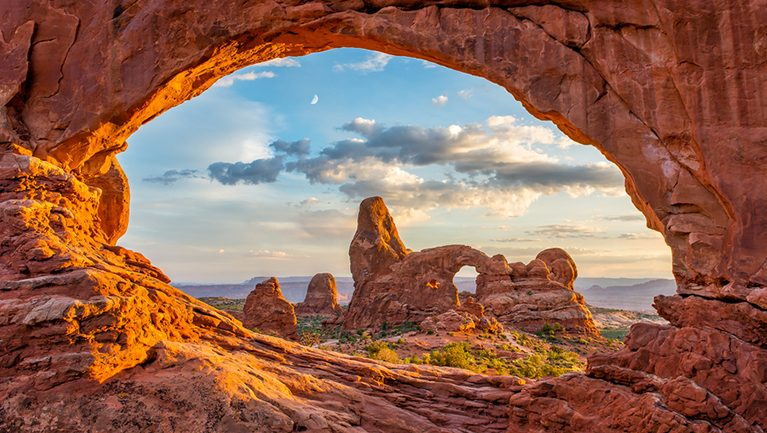

拱門國家公園
拱門國家公園（英語：Arches National Park，又被譯作阿切斯國家公園）是美國的一個國家公園，位於猶他州東部、摩押以北4英里（6公里）處，緊鄰科
羅拉多河。公園保存了包括世界知名的精緻拱門在內的超過2000座天然拱門，以及獨特的地理資源和地形。拱門國家公園的天然拱門是全世界密度最高的。
公園面積為310.31平方公里（76,679英畝；119.811平方英里）的高地沙漠，位在科羅拉多高原上。園內最高處象峰，海拔5,653英尺（1,723公尺）；最低處遊
客中心，海拔4,085英尺（1,245公尺）。公園年均降雨量少於10英寸（250 mm）。
拱門國家公園由美國國家公園管理局負責管理，最初於1929年4月12日成為國家紀念區，1971年11月12日成為國家公園。2018年遊客數量達160萬人。
歷史
人類從最近一次冰河時期（1萬年前）就已在此居住。直到7百年前，費利蒙人和阿納薩齊人也定居於此。1775年，西班牙傳教士在此首遇猶特人和派猶特人的
部落，但直到1855年摩爾門先驅者才嘗試建立聚落，但不久後便離開。到了1870年代晚期，牧場主、農夫和探礦者開始定居於附近的河谷聚落摩押，而此處的
奇岩怪石美景也漸漸傳開，成為可能的觀光景點。
地質
拱門國家公園位於地底蒸發岩或鹽層上方，因此造成了拱門、尖塔、平衡石、砂岩鰭和孤立岩的形成。鹽岩層在某些地方達數千英尺深，約在3億年前沉積。
當時海水流入科羅拉多高原中的悖論盆地，並在最終被蒸發。海水消失的幾百萬年後，鹽層被東北方安肯帕格里高原風化形成的碎石所覆蓋。在侏儸紀時代
早期（約2億年前），沙漠地形形成，範圍廣大的納瓦霍砂岩層在此時沉積。其後，水流和風化的沉積物形成了恩特拉達沙岩層（約1億4千萬年前），並沉
積於納瓦霍砂岩層上。往後沉積了超過5,000英尺（1,500公尺）厚的年輕地質層，但多被完全侵蝕，殘餘物則存在於白堊紀曼柯斯頁岩暴露的區域。此地區
的拱門大多形成於恩特拉達砂岩層內。
特色景點
平衡石（Balanced Rock）－體積相當於三輛校車的巨石立在岩頂
法院塔（Courthouse Towers）－一系列的高聳石柱
黑天使（Dark Angel）－一座高達150英尺（46公尺）的獨立砂岩柱，位於魔鬼花園步道終點
精緻拱門（Delicate Arch）－經歷長時間風雨侵蝕卻沒有倒塌，成為拱門國家公園和猶他州主要地標
魔鬼花園（Devil's Garden）－因散佈拱門和石柱而出名
雙零拱門（Double Arch）－兩個相同大小的拱門，其中一端相連
火爐（Fiery Furnace）－有類似迷宮的狹窄通道和高聳石柱（參考聖經典故，但以理書第三章）
景觀拱門（Landscape Arch）－位在魔鬼花園內，非常細長的拱門，長度達290英尺（88公尺），是公園裡最長的拱門
石化沙丘（Petrified Dunes）－從古老湖泊吹來的沙丘殘餘物，已被石化
牆壁拱門（Wall Arch）－位於魔鬼花園步道上，已於2008年8月倒塌